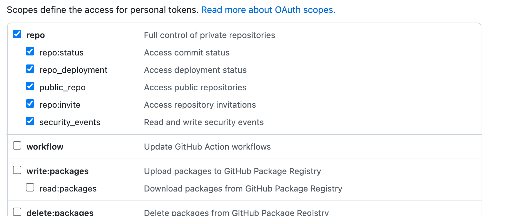
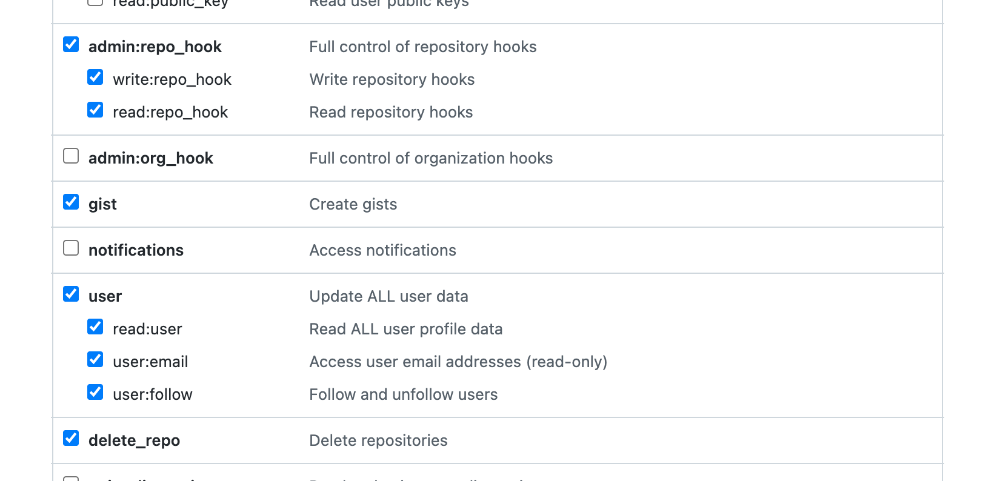

Hexo를 이용한 github 블로그 생성하기
Hexo 프레임워크를 이용해 블로그를 작성하고, github에 자동 deploy 까지
설치하기
1 | npm install hexo-cli -g |
https://hexo.io/
https://github.com/ppoffice/hexo-theme-hueman
github 연동하기
Project > Settigns > GitHub Pages
Branch: main
hexo deploy 를 하면, 마크다운 문서를 파싱하면서 배포파일을 만들어주는데 이 파일이 실제 웹 브라우저에서 보여져야할 파일이므로 이 역할을 기본 브랜치(main)에서 할 수 있도록 main 으로 적용했다.
블로그 작성은 develop 브랜치를 둔다.
Project > Settings > Secrets > Actions
HEXO_DEPLOY_TOKEN 이름으로 토큰을 등록한다.
여기서의 토큰은 아래에서 받은 액세스 토큰을 사용한다.
Account Settings > Developer settings > Personal access tokens
기간을 설정하면, 새로운 토큰을 발급하는데 이 발급된 토큰을 등록해준다.


참고: https://hyeo-noo.tistory.com/184
**주기적으로 Actions 토큰을 업데이트 해준다.
**Mac 에서는 cmd + space > keychain 접근에서 github.com 은 모두 삭제해준 후에 IDE에서 토큰을 재등록해준다.
github deploy 등록하기
Project > Actions
workflow 를 자동으로 생성할 수 있게 많이 제공하지만, 일단 ‘and set up a workflow yourself’ 를 클릭해서 개별 스크립트를 작성해준다.
develop 디렉토리에 push 되었을 때, deploy 할 수 있게 만든다.GITHUB_TOKEN은 위에서 만든 HEXO_DEPLOY_TOKEN 변수를 적용해준다.
1 | // develop.yml |
참고: https://blog.hodory.dev/2019/08/23/deploy-hexo-blog-with-github-actions/
Actions 실행되는 스크립트는 config 파일의 deploy 변수를 제대로 걸어주지 못하면, 아래와 같은 오류를 만나게 된다.
fatal: could not read Password for ‘https://jelee603@github.com': No such device or address
해결 방법:
등록된 토큰을 확인하고, 아래와 같이 변수를 추가해준다.
2
3
4
deploy: type: git;
//__GITHUB_TOKEN__@github.com/[user_name]/[user_name].github.io.git
repo: https: branch: main;
위와 같이 작성하고, push 를 하게 되면, build 가 시작되고 정상적으로 완료되면, 블로그에 반영이 된다!
Generate 포매터 변경
scaffolds > post.md에 필요한 포맷을 넣어두면 파일이 생성될 때, 자동으로 들어간다.
기본 포맷은 날짜형태가 중괄호 문법으로 들어가 있는데, 자동완성으로 코드가 변경되면 이 포맷이 깨지게 된다.
1 | // 원본 |
이렇게 저장되는 것을 방지하려면, 마크다운 파일의 경우에만 자동저장 기능을 꺼준다.
1 | //settings.json |
글쓰기 (마크다운)
post 파일 생성 방법
1
2
3
4
5
6
7
8// new post
hexo new [layout] <title>
hexo server
ex) hexo new <title>
// draft
hexo new draft <title>
hexo server --draft마크다운 하이퍼링크 연결
알파벳은 반드시 소문자만 가능
띄어쓰기는 -(하이픈)으로 구분